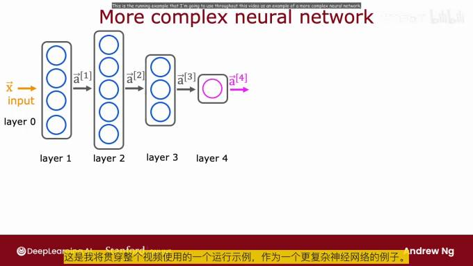
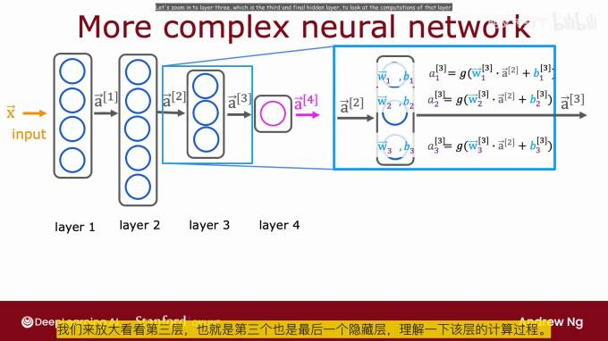
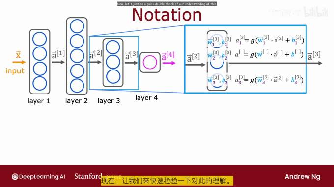
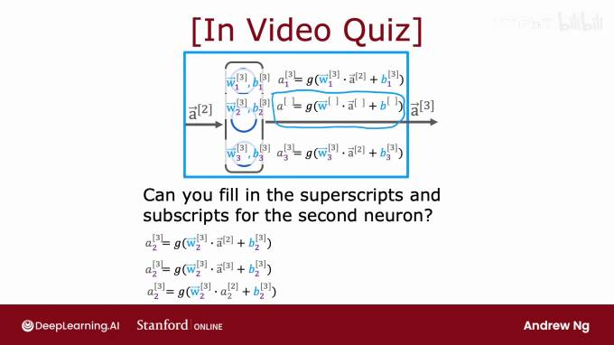
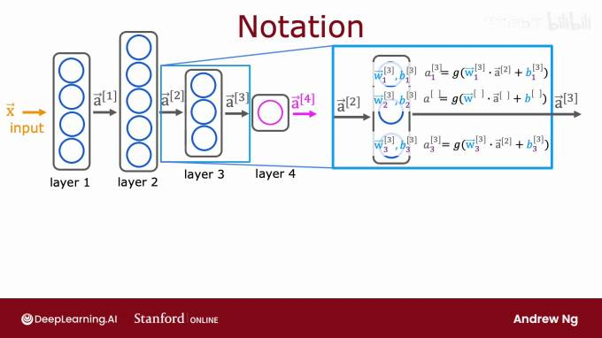

00:02在上一个视频中，你学习了神经网络层，以及它如何输入一个数字向量，并相应地输出另一个数字向量。
00:13在这个视频中，我们就用那样的层来构建一个更复杂的神经网络。
00:19希望通过这个例子，我们使用的神经网络标记法也会变得更加清晰和具体。
00:28这是我将贯穿整个视频使用的一个运行示例，作为一个更复杂神经网络的例子。

00:36这个网络有四层，不算输入层，输入层也叫第零层，其中第一、二、三层是隐藏层，第四层是输出层。
00:49而第零层，像往常一样，是输入层。
00:54按照惯例，当我们说一个神经网络有四层时，这包括了所有隐藏层和输出层，但我们不把输入层算。
01:04所以，按网络层数的常规计算方式，这是一个四层神经网络。
01:11我们来放大看看第三层，也就是第三个也是最后一个隐藏层，理解一下该层的计算过程。

01:20第三层输入一个向量，即由前一层计算出的上标方括号二的 A，并输出 A 三，那么，第三层为了从 A 二得到 A 三，进行了怎样的计算呢？
01:44如果它有三个神经元，或者我们称之为三个隐藏单元，那么它就有参数 W 一 B 一、W 二 B 二和 W 三 B 三，它计算 A 一等于该层输入与 W 一的点积加上 B 一的 S 型函数值。
02:06它计算 A 二等于再次与 A 二，即该层的输入，与 W 二的点积加上 B 二的 S 型函数值，以此类推，得到 A 三。
02:19然后，这一层的输出就是一个由 A 一、A 二、A 三组成的向量。
02:31如果我们想更明确地表示，所有这些量都是与第三层相关联的，我们就在这里全部加上上标方括号三，来表示这些参数 W 和 B 是第三层中神经元的参数，注意，这里的这一项是 w 一上标方括号三，意思是与第三层相关的参数，点乘 a 上标方括号二。
03:07也就是第二层的输出，它成了第三层的输入。
03:10所以这里有个三，是因为这是与第三层相关的参数，点乘的对象有个二，是因为它是第二层的输出。
03:21现在，让我们来快速检验一下对此的理解。

03:25我将隐藏与第二个神经元相关的上标和下标。
03:33在不倒回视频的情况下，如果你想倒回去看也可以，但建议你不要。
03:39不过，在不倒回视频的前提下，你是否能想清楚这个等式中缺失的上标和下标是什么，并自己填补。
03:49不妨看看视频末尾的小测验，看能否找出下面这个等式合适的上标和下标？

03:59如果你选了第一个选项，那你就选对了。
04:03第三层第二个神经元的激活值记为 A 三二。
04:10要应用激活函数 g，让我们使用这个相同神经元的参数。
04:16所以 w 和 b 会有相同的下标二和上标方括号三。
04:24输入特征将是前一层的输出向量，也就是第二层。
04:36第二个选项用的是向量 a 三，那不是前一层的输出向量。
04:47而第三个选项以 a 二二作为输入，那仅仅是一个数字而非向量。
04:56因为回忆一下，正确的输入是向量，带个小箭头的 a 二，而不仅仅是一个数字。

05:06所以总结一下，a 三是第三层第二个神经元关联的激活值，因此下标是二。
05:18对第二个神经元而言，和上面一样这里是 a 二，然后加上 b 三二。
05:28对于任意层 L 和任意单元 J，该等式更一般的形式如下。
05:36A，即第 L 层第 J 单元的激活输出，比如 A 三二，将是对这一项应用 S 型函数的结果，这一项是第 L 层，比如第三层，第 J 单元对应的权重向量。
05:54所以上面的例子再次对应下标二。
05:58因此，它与上一层的激活值进行点积，注意这里不是 L，是 L 减一，就像上面的二一样，因为你是和前一层的输出做点积。N。
06:09然后加上该层该单元 j 的参数 b。
06:19这就得到了第 L 层第 J 单元的激活值，其中上标方括号 L 表示第 L 层，下标 J 表示第 J 单元。
06:32在构建神经网络时，第 J 单元指的就是第 J 个神经元。
06:37我们有时会混用这两个术语，即每个单元就是该层中的单个神经元。
06:48在神经网络的语境下，g 还有另一个名字，也叫激活函数，因为 g 输出了这个激活值。
06:58所以当我说激活函数时，我指的就是这个函数 g。
07:03到自前为止，你看到的唯一激活函数是 S 型函数。
07:08但下周，我们将看看除了 S 型函数，还有什么其他函数也可以被插入替代 g。
07:16不过总之，激活函数就是指那个输出这些激活值的函数。
07:23还有最后一项标记法的说明。
07:26为了让所有标记保持一致，我还要给输入向量 x 起另一个名字，那就是 A 零。
07:37这样，这个相同的等式也适用于第一层，当 L 等于一时，第一层的激活值，也就是 A 一，将是 S 型函数乘以权重与 A 零的点积，n。
07:52而这不过就是输入特征向量 x。
07:56有了这套标记法，你现在知道如何计算神经网络中任意层的激活值了，它们是参数和前一层激活值的函数。
08:08所以你现在知道，给定前一层的激活值，如何计算任意层的激活值了。
08:15让我们把这个逻辑整合成神经网络的推理算法。
08:19换句话说，就是如何让神经网络做出预测。